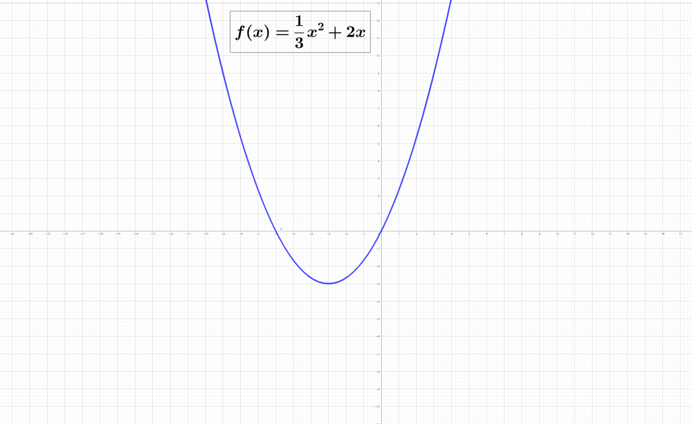

El paso al límite: Derivada
LA FUNCIÓN DERIVADA
Dada la función \( f(x) = \frac{1}{3}x^2 + 2x \), calcula su derivada en los puntos siguientes haciendo el límite de la Tasa de Variación Media (TVM) a medida que el intervalo se acerca al punto[cite: 7]:
Punto \(x = 0\)
| Intervalo | [0, 1] | [0, 0.1] | [0, 0.01] | [0, 0.001] | [0, 0.0001] |
|---|---|---|---|---|---|
| TVM |
\( f'(0) = \)
Punto \(x = 1\)
| Intervalo | [1, 2] | [1, 1.1] | [1, 1.01] | [1, 1.001] | [1, 1.00001] |
|---|---|---|---|---|---|
| TVM |
\( f'(1) = \)
Punto \(x = 2\)
| Intervalo | [2, 3] | [2, 2.1] | [2, 2.01] | [2, 2.001] | [2, 2.00001] |
|---|---|---|---|---|---|
| TVM |
\( f'(2) = \)
Punto \(x = -1\)
| Intervalo | [-1, 0] | [-1, -0.9] | [-1, -0.99] | [-1, -0.999] | [-1, -0.99999] |
|---|---|---|---|---|---|
| TVM |
Interpreta tus resultados gráficamente utilizando esta representación de la gráfica de la función:

¿Cómo se puede interpretar la derivada en cada punto?
Definición de función
Derivada en un punto (Límite de la TVM)
La derivada de una función en un punto \(x_0\) mide la rapidez instantánea con la que cambia la función en ese preciso instante. Se define formalmente como el límite de la Tasa de Variación Media (TVM) cuando el intervalo de estudio se hace infinitamente pequeño (\(h \to 0\) o \(x \to x_0\)):
\( \displaystyle f'(x_0) = \lim_{x \to x_0} \frac{f(x) - f(x_0)}{x - x_0} = \lim_{h \to 0} \frac{f(x_0 + h) - f(x_0)}{h} \)
Ejemplo · Expresión algebraica
Dada la función \( f(x) = \frac{1}{3}x^2 + 2x \), calculamos su derivada en el punto \(x_0 = 1\) aplicando el límite de la TVM:
1. Planteamos la TVM en un entorno de \(1\) con un incremento \(h\):
\(\displaystyle \text{TVM}[1, 1+h] = \frac{f(1+h) - f(1)}{h}\)
2. Resolvemos el límite cuando \(h\) se aproxima a \(0\):
\(\displaystyle \text{TVM}[1, 1+h] = \frac{f(1+h) - f(1)}{h}\)
2. Resolvemos el límite cuando \(h\) se aproxima a \(0\):
\( \displaystyle f'(1) = \lim_{h \to 0} \left( \frac{8}{3} + \frac{1}{3}h + 2 \right) = \frac{8}{3} \approx 2.67 \)
Ejemplo · Tabla de valores
Podemos aproximar el valor de la derivada observando cómo se comporta la TVM al estrechar los intervalos alrededor de \(x = 1\):
Al tender el intervalo a cero, el límite se estabiliza en \(f'(1) = \frac{8}{3} \approx 2.6667\).
| Intervalo | [1, 2] | [1, 1.1] | [1, 1.01] | [1, 1.001] | [1, 1.00001] |
|---|---|---|---|---|---|
| TVM | \(3.0000\) | \(2.7000\) | \(2.6700\) | \(2.6670\) | \(2.6667\) |
Ejemplo · Gráfica
Gráficamente, la derivada en un punto es el límite de las rectas secantes (TVM). Cuando el punto \(x_2\) se acerca a \(x_1\), la recta secante se transforma en la recta tangente a la curva en ese punto.
Pendiente de la recta tangente = \(\displaystyle f'(x_0) = \lim_{\Delta x \to 0} \frac{\Delta y}{\Delta x}\)
Ejemplo · Expresión escrita
“La velocidad instantánea que marca el velocímetro de un coche en un segundo exacto de su viaje. Mientras que la TVM mide el promedio de velocidad de todo un trayecto, la derivada (como límite de la TVM) calcula la velocidad real en el milisegundo exacto en que miramos el cuentakilómetros.”
Estimación del valor de la derivada
Estima el valor de la derivada de la función en los puntos indicados: